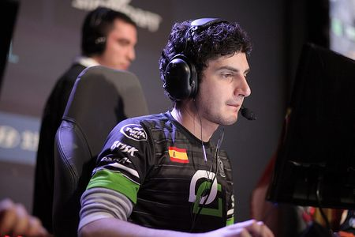
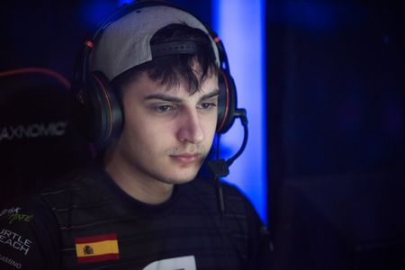
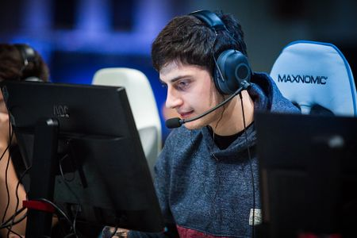
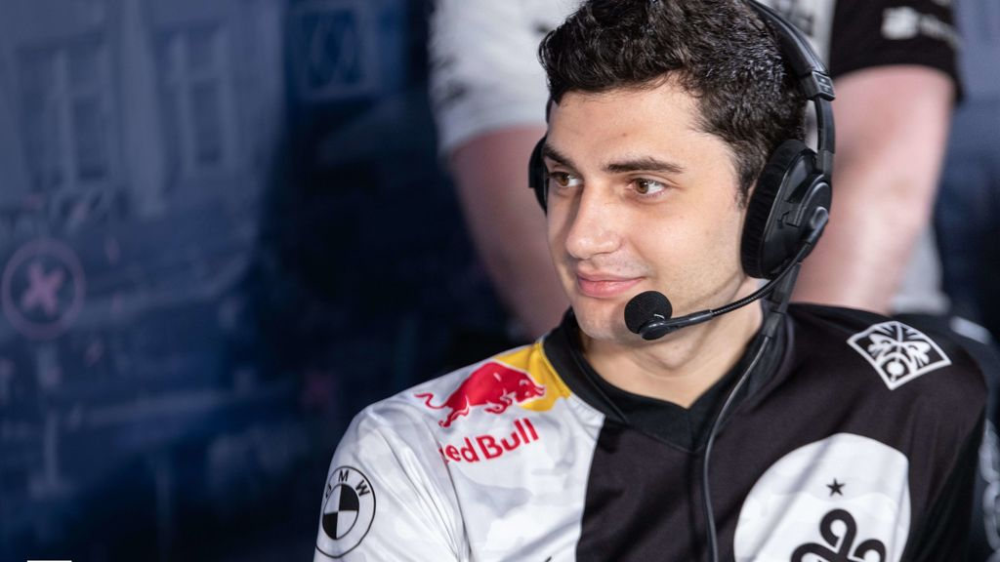
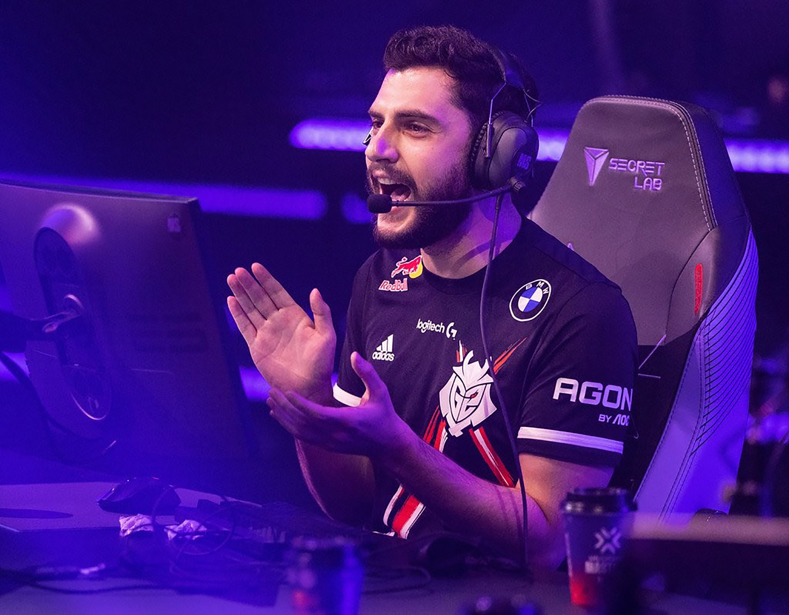
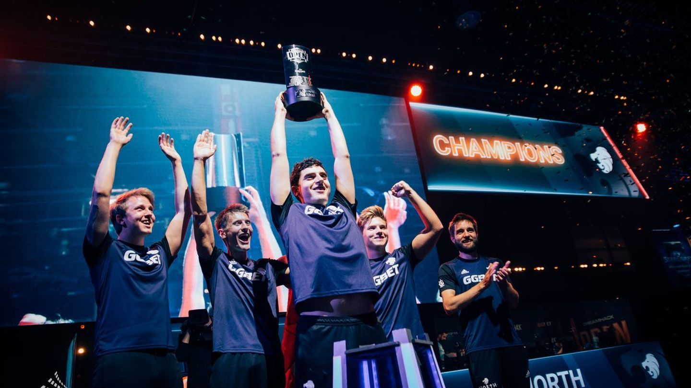

MIXWELL

Mixwell, cuyo nombre real es Óscar Cañellas, es un destacado jugador profesional de videojuegos. Es reconocido por su habilidad en el juego de disparos en primera persona Counter-Strike: Global Offensive (CS:GO) y ha representado a su país en competiciones internacionales. Conocido por su destreza con el rifle francotirador AWP, Mixwell ha obtenido numerosos logros y ha dejado una marca en la escena de los esports. Además, ha sido una fuente de inspiración para la comunidad de jugadores, compartiendo su experiencia y conocimientos a través de transmisiones en vivo y contenido en línea. En resumen, Mixwell es un jugador talentoso y respetado en el mundo de los esports, tanto por sus logros en el juego como por su contribución a la comunidad.
TRAYECTORIA

Mixwell ha tenido una destacada carrera en los deportes electrónicos, específicamente en el juego de disparos en primera persona CS:GO. Su participación en equipos de renombre internacional, como Cloud9, Optic Gaming y G2 Esports, demuestra su nivel de habilidad y su capacidad para competir en los más altos niveles de la escena profesional. A través de su participación en torneos, ha acumulado una amplia experiencia y ha enfrentado a algunos de los mejores jugadores del mundo.
gBots
La carrera de Óscar "Mixwell" Cañellas en los esports comenzó en 2014, cuando se unió al equipo español gBots. Durante ese tiempo, Mixwell participó en varios torneos locales y regionales, desarrollando sus habilidades y ganando experiencia en competencias de menor escala.
Optic Gaming

En 2016, Mixwell se unió al equipo internacional Optic Gaming, donde tuvo su gran avance en la escena internacional de CS:GO. Optic Gaming era un equipo de renombre con sede en Estados Unidos, y Mixwell se convirtió en el único jugador español en competir en un equipo de alto nivel en ese momento. Su incorporación al equipo coincidió con una notable mejora en el rendimiento de Optic Gaming, ya que lograron resultados destacados en varias competiciones importantes.
Uno de los momentos más destacados de la trayectoria de Mixwell con Optic Gaming fue en el Eleague Season 2, donde el equipo llegó a las finales y obtuvo el segundo lugar. Mixwell impresionó con su habilidad con el AWP y fue elogiado por su desempeño durante todo el torneo.
Cloud9
Después de su exitoso paso por Optic Gaming, Mixwell se unió al equipo Cloud9 en 2017. Fue durante su tiempo en Cloud9 cuando logró uno de los mayores logros de su carrera: ganar la ESL Pro League Season 4 Finals en Odense, Dinamarca. Cloud9 derrotó a equipos de renombre como SK Gaming y FaZe Clan en su camino hacia la victoria. Mixwell desempeñó un papel fundamental en el éxito del equipo, mostrando su habilidad con el AWP y contribuyendo con importantes impactos y jugadas clave.
G2 Esports
Después de su paso por Cloud9, Mixwell regresó a Europa y se unió al prestigioso equipo G2 Esports en 2019. Con G2, ha continuado demostrando su talento y habilidades, compitiendo en torneos de alto nivel y enfrentándose a los mejores equipos del mundo.
Es importante destacar que la trayectoria de Mixwell no solo se basa en sus resultados en competiciones, sino también en su dedicación y constancia. Ha demostrado una notable capacidad para adaptarse a diferentes equipos y estilos de juego, lo que habla de su versatilidad y habilidad para trabajar en conjunto con sus compañeros de equipo.
En resumen, la trayectoria de Mixwell en los esports ha sido impresionante. Desde sus inicios en equipos españoles hasta su participación en equipos internacionales de renombre, ha dejado una marca significativa en la escena competitiva de CS:GO. Su éxito en torneos importantes y su habilidad con el AWP lo han convertido en un jugador respetado y reconocido en la comunidad de esports.
NACIONALIDAD

Mixwell es originario de España y ha sido un orgulloso representante de su país en competiciones internacionales. Ha llevado la bandera española a escenarios de alto nivel, lo que ha contribuido a promover y fortalecer la presencia de España en el mundo de los esports. Su éxito y logros han ayudado a poner a España en el mapa de los deportes electrónicos.
LOGROS

Mixwell ha alcanzado numerosos logros y ha recibido reconocimientos a lo largo de su carrera. Algunos de sus mayores triunfos incluyen la victoria en la ESL Pro League Season 9 y la DreamHack Open Valencia 2017. Estos logros demuestran su capacidad para desempeñarse en situaciones de alta presión y su habilidad para superar a los mejores equipos y jugadores del mundo.
INFLUENCIA

Mixwell ha dejado una marca significativa en la comunidad de jugadores de CS:GO, especialmente en España. Su éxito y dedicación al juego han inspirado a muchos jugadores jóvenes a perseguir sus sueños en los esports. A través de sus transmisiones en vivo y su contenido en línea, comparte su experiencia y conocimientos con la comunidad, brindando consejos útiles y motivación para mejorar en el juego.